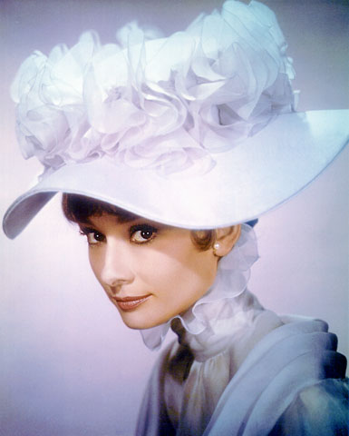
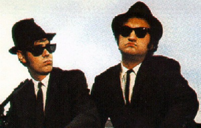
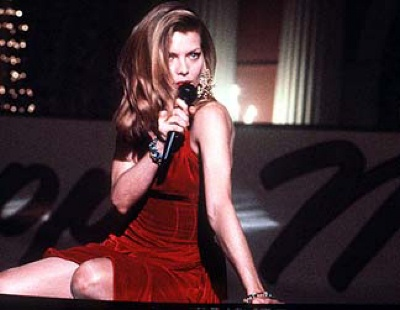

Favorite Musicals
| Honeysuckle Rose (1980) "Now we're alone and I am singing my song for you" Guys and Dolls (1955) "One of these days in your travels, a guy is going to show you a brand- new deck of cards on which the seal is not yet broken. Then this guy is going to offer to bet you that he can make the jack of spades jump out of this brand-new deck of cards and squirt cider in your ear." Victor/Victoria (1982) "You should be ashamed, bringing your poor old mother into a place like this" The Music Man (1962) "Any boob can shove a ball in a pocket" The Gay Divorcee (1934) "You're wife is safe with Tonetti, He prefers spaghetti" The Fabulous Baker Boys (1989) "Get out of here... Get me some money too." Songwriter (1984) "We underestimated you" The Blues Brothers (1980) "Hit it!" My Fair Lady (1964) "She will listen very nicely, Then go out and do precisely what she wants." The Best Little Whorehouse in Texas (1982) Miz Mona and her two enormous talents. The Rose (1979) "I hate this mushy love stuff... wake me when the killing starts." |
   |